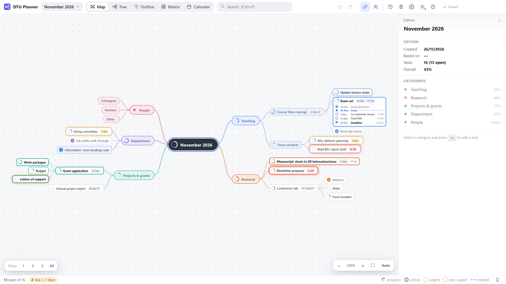
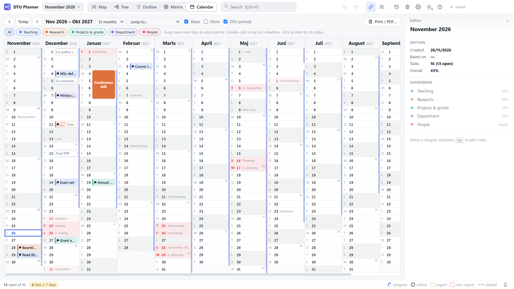

One tree for everything
Categories, subcategories, tasks and information notes, with a People branch for colleagues and partners. Map, tree and outline views, keyboard first, with undo.
Deadlines that speak up
Urgency rises as a deadline approaches, timelines track the steps before it, and an Urgent × Critical matrix shows what to do first. Windows notifications and an optional morning summary.
Editions and history
Start a new edition each month or term and carry over what is still open. Every save is kept in a journal and a daily snapshot, so earlier versions can always be brought back.
DTU Planner is made for working life at DTU and in Denmark. The calendar knows the Danish public holidays and customary days off, shows DTU's semesters and three-week periods (editable in Settings), and uses Danish day letters and month names. Dates are written DD/MM/YY and weeks start on Monday. The rest of the program is in English.
It is open source under the MIT licence. You are free to use it, change it and share your own version, for example with other holidays or another university's semesters, as long as you keep the copyright and licence notice that comes with the source.
Download DTUPlanner-setup.exe and run it. It installs for your
own user in a few seconds, with no admin rights, and adds DTU Planner to the Start
menu and the desktop.
Windows will warn you the first time. The program is not code-signed, so Windows SmartScreen shows "Windows protected your PC". Click More info, then Run anyway. This happens once.
On first start it asks where to keep your data. A synced folder (Dropbox, OneDrive) keeps the same plan on all your PCs and gives you version history.
The installed version updates itself. When a new version is out, it downloads in the background, is checked against its published checksum, and DTU Planner offers Restart now. Your work is saved first. The portable version cannot replace itself; it tells you when there is a new one to download.
Your plan stays yours. Everything is stored as plain files in the folder you choose, with a journal, daily snapshots and a second copy outside the synced folder. The only thing DTU Planner fetches from the internet is the update check; nothing about your plan is sent anywhere.